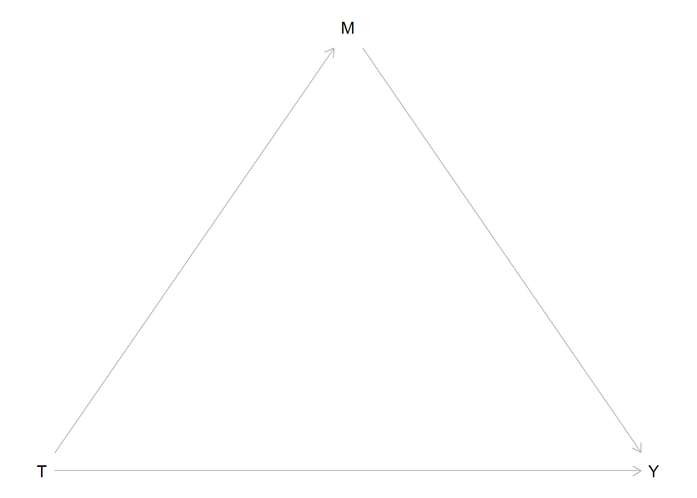
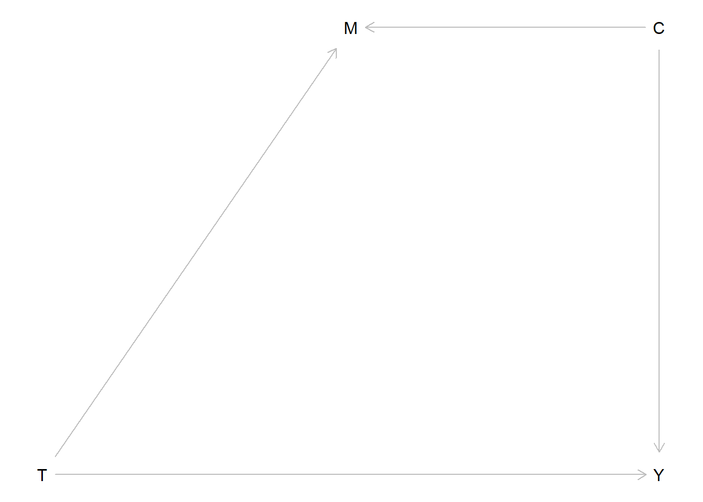
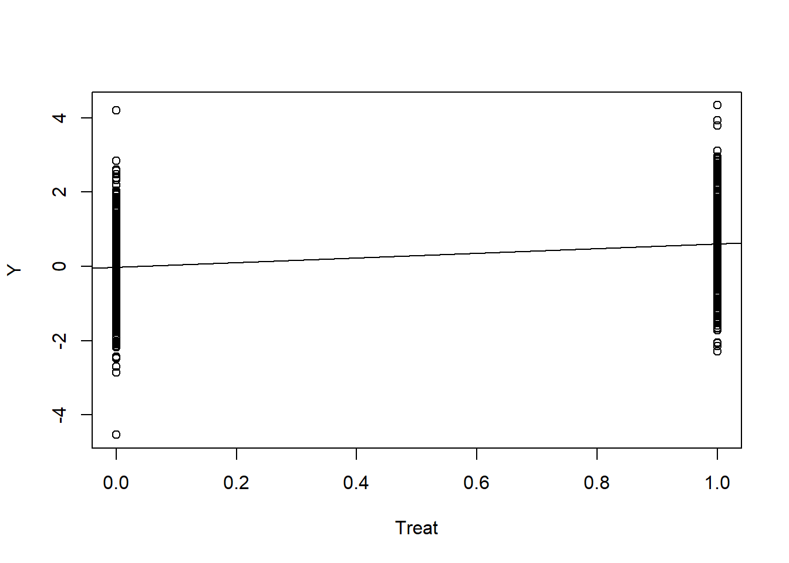
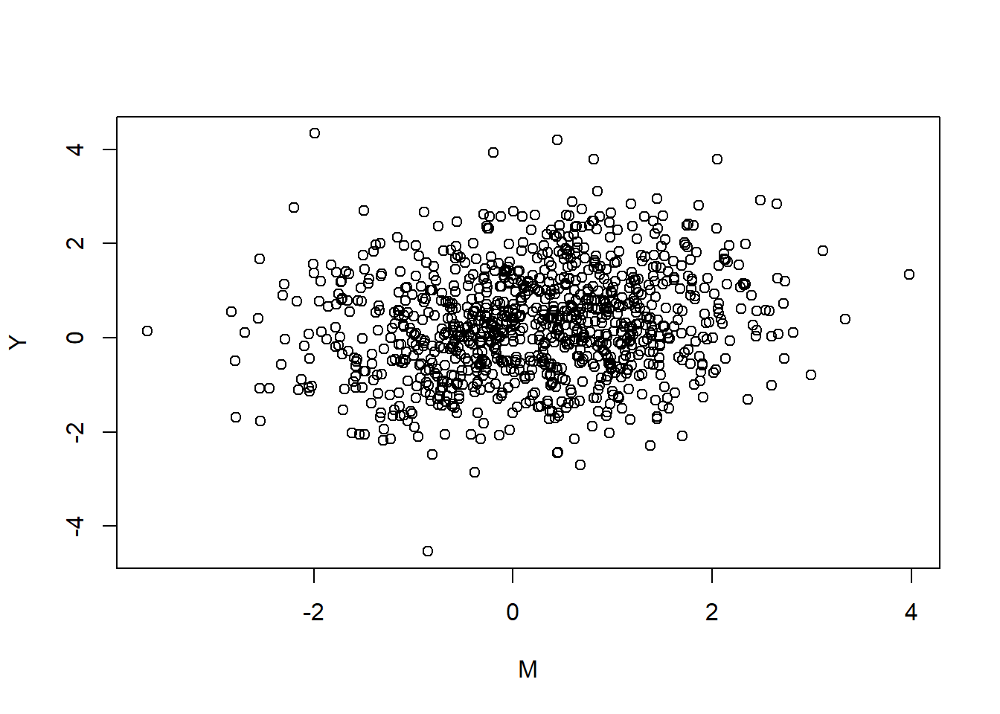
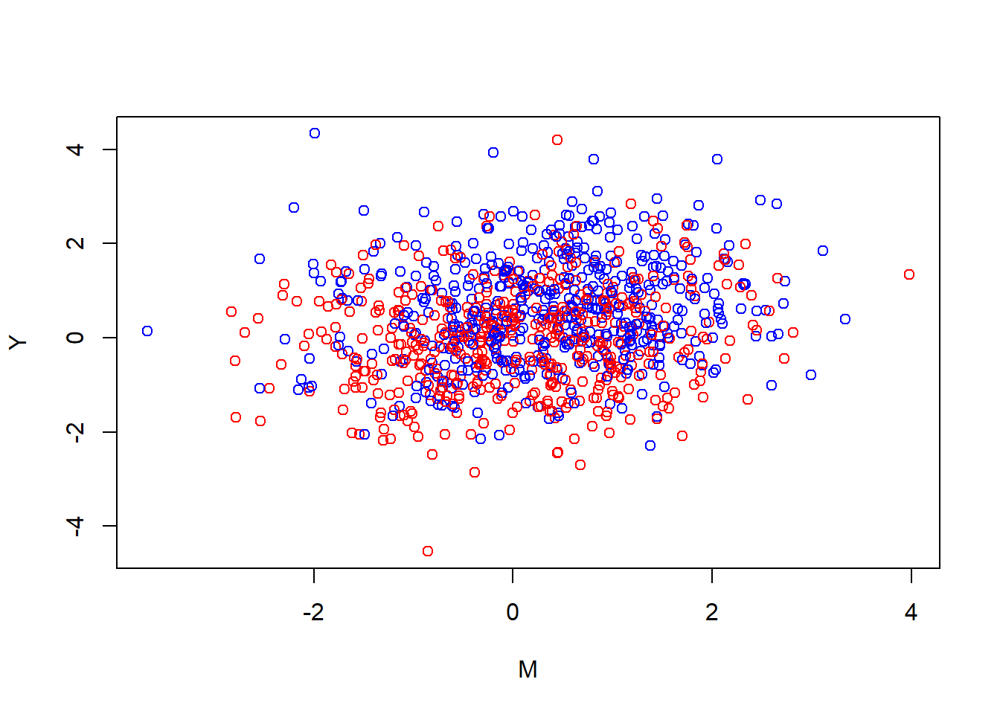
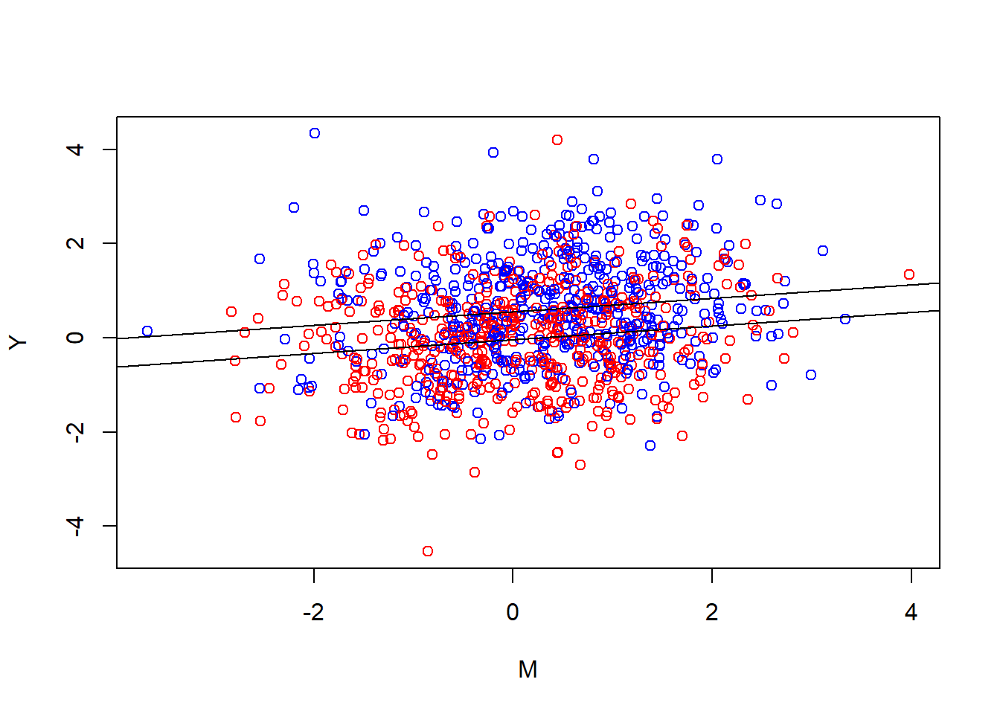
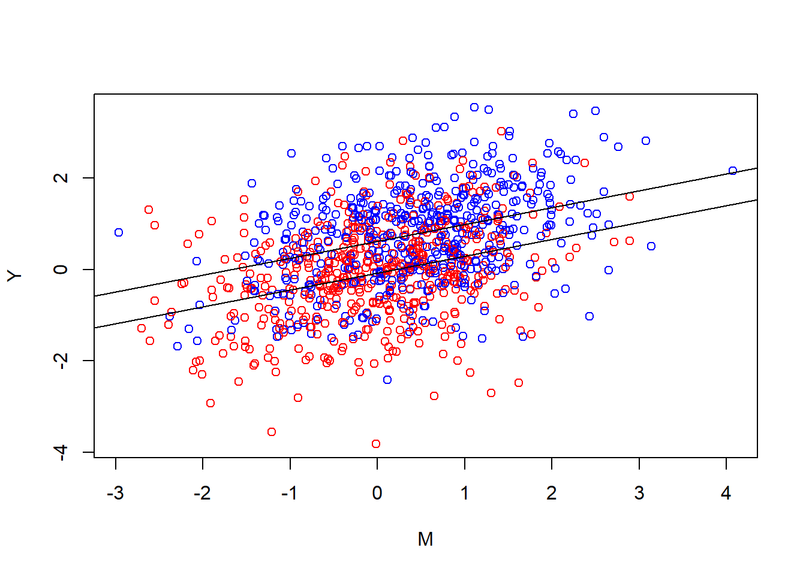
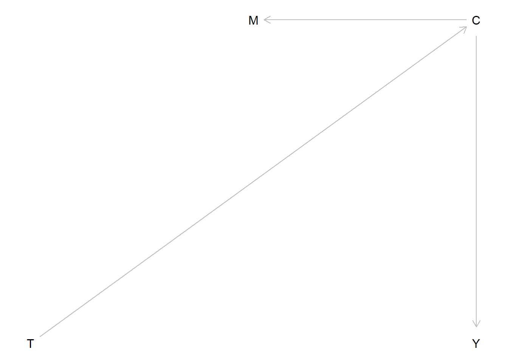
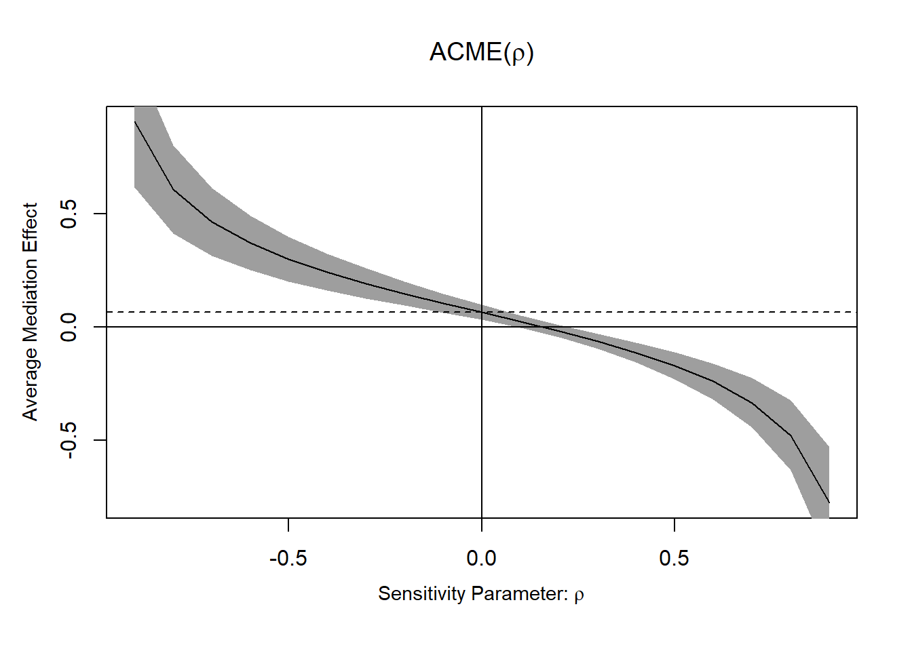

Establishing mediation is difficult even in the best of all worlds
mediation
I should humbly preface all of this by saying that this post was written as an attempt of making sense of the subject by explaining it to myself. I am not an expert. “Not yet” (humbly). At the end of the post I’ll link some more qualified sources.
Mediation analyses in randomized control trials can deceptively seem like more solid than they are. We’ve randomly assigned treatment to half participants, while the other half get nothing. If there’s a difference in the outcome we can confidently assume that it is due to random chance. Better yet, we can do inferential statistics and get numbers about how unlucky we would have to be in a universe where the treatment was inert to randomly happen upon a difference this big. RCTs really are magic.
You’re a real clinical researcher, doing real clinical trials. You pity those observational researchers, desperately trying to make sense of some messy table of regression coefficients. “Arguing” about which interpretation makes sense. You don’t work like that. You get proof.
Anyway, it would be interesting to see what’s actually going on with your (definitely working) treatment protocol. There are many ways to do this with alternative research designs, but you opt for an easy one: throw in a measure of a variable you hypothesize to be an important link in the causal chain for how your treatment affects the outcome. Then do a mediation analysis.
Your latest in a long successful run of clinical trials is a psychological intervention for suicidal ideation. The therapists aren’t precisely treating the suicidal ideation directly though. Instead the treatment is a complicated multifaceted mixed-bag shotgun approach where they use all sorts of methods to help the patient feel hopeful about the future. The assumption is that if patients are hopeful about the future they won’t fantasize about the escape of death. It makes sense, but it has never been verified.
You’ve already chosen the outcome scale, the Ivy-League University Do You Wanna Die Scale. Now to choose a measurement for your mediator. A quick google search turns up the Famous Hospital Hopelessness Scale. Good enough! Let’s throw that measure into the study and skim some stuff about mediation analysis and get this published somewhere.
Ok, it seems ideally one should measure the mediator before the outcome so you make the therapists administer it a couple of days before the end-of-treatment assessment. Let’s draw a diagram of what we’re analyzing:
We call the path from treatment (T) to the mediator (M) our a-path. The path from M to Y is our b-path. The direct path from T to Y is our c’-path. The classical method for mediation analysis is to use regression to build the model in two steps. First regressing the mediator on your treatment variable, then regressing your outcome variable on both the treatment and the mediator. In other words the a-path is the treatment effect on the mediator and the b-path is the conditional effect of the mediator. Usually the thing you’re interested in is the ab-product. (another method is to compare a model with or without M, but let’s set that aside for now).
You go through the steps and you find that your ab-product is significant. The only remaining question for you is which high impact journal you should publish in and how you should best gloat in front of your poor observational research colleagues.
Right?
We randomized stuff! We should be able to do the same old inferential statistics as we do for our treatment effects?
If we’re just observing cross-sectional data, there’s no way to know the direction the causal arrows in our DAG goes from just looking at the data. But here we know we’ve intervened on T. The only reason T is what it is for a given patient is because we flipped a coin. On the other hand, for one specific patient Y can be what it is for many reasons. T could be one of them, but we can probably assume that a patient’s level of suicidal ideation at the end of our treatment is affected by more stuff than whether they got the treatment. First of all, not all patients start at the same level. Some have further to go. Second of all, our treatment is merely one aspect of their life. Some patients get lucky and coincidentally meet the love of their life during treatment, others are betrayed by the person they thought were the love of their life but was actually a total [REDACTED]. Finally, the treatment effect itself is heterogeneous, some people just don’t vibe with our therapists.
Luckily, we don’t aim for total certainty about why one particular patient responded. We’re interested in average group-level effects. All that other stuff cancels out in aggregate. The fact that patient 22 got her dream job (which truly was everything she hoped it would be) in the middle of the trial is unrelated to whether our coin flip landed on heads. The same goes for our mediator.
So where’s the problem? Well, as we just concluded, suicidal ideation and hopelessness is not only affected by whether patients got treated. They are also affected by factors that can be common causes.
Behind the scenes it turns out the causal events that generate your data looks like this:
#Treatment is randomized so every other patients get the active treatment
Treat <- rep(c(0,1), length.out = 1000)
#There also exist a common cause affecting both outcome and "mediator" which varies between individuals
Common <- rnorm(1000, mean = 0, sd = 1)
#the level of the outcome is a combination of our (here perfectly homogenous) treatment effect, this common cause, and other external random things
Y <- 0.6*Treat + rnorm(1000, mean = 0, sd = 1) + 0.5*Common
#the same is true for the mediator
M <- 0.4*Treat + rnorm(1000, mean = 0, sd = 1) + 0.5*Common
#We'll save it in a dataframe for later
data_B <- data.frame(Y,Treat,M,Common)Or in other words, the Directed Acyclic Graph (DAG) actually looks like this:

Of course you don’t know that. If you knew the true DAG you wouldn’t be running studies. So you run a mediation analysis. You plug it into this fancy potential outcomes mediation package: mediation.
# a linear model for the mediator
mdl.m <- lm(M ~ Treat)
# a linear model for the outcome, controlling for the mediator
mdl.y <- lm(Y ~ Treat + M)
#then we run the mediation function
med.out <- mediate(mdl.m, mdl.y, treat = "Treat", mediator = "M", robustSE = TRUE, sims = 1000)
summary(med.out)
Causal Mediation Analysis
Quasi-Bayesian Confidence Intervals
Estimate 95% CI Lower 95% CI Upper p-value
ACME 0.043392 0.018010 0.072932 < 2.2e-16 ***
ADE 0.588600 0.465921 0.726112 < 2.2e-16 ***
Total Effect 0.631993 0.507593 0.766180 < 2.2e-16 ***
Prop. Mediated 0.066569 0.027674 0.120303 < 2.2e-16 ***
---
Signif. codes: 0 '***' 0.001 '**' 0.01 '*' 0.05 '.' 0.1 ' ' 1
Sample Size Used: 1000
Simulations: 1000 There we see a significant ACME, Average Causally Mediated Effect. It even has the word causal it in! “Causality established! The treatment reduces suicidal ideation partially because it reduces hopelessness about the future.”
Ok, so what has happened here? “The causes are not in the data, the causes are in the world” Richard McElreath repeatedly reminds us in his course and book Statistical Rethinking. The data is just a set of associations between three variables. No statistical technique can determine whether the arrow goes one direction or the other. To have a causal interpretation we need to know or assume things about the data. This is always true.
Yes, you know. You know all this. But we randomized!
Well, as you can see in the data-generating code, we didn’t randomize the common causes, those are still external. The short explanation is that the common cause has created a spurious non-causal association between M and Y, and this is enough for your medaition analysis to find an effect that (causally) isn’t there.
Let’s think through this even more carefully
Ok, wait. What are we even doing here? Let’s go back to the classical regression based method for mediation analysis. Actually, let’s go further back: What happens when we run a regression? Look at the scary LaTeX font!
\[M_i=\beta_0+\beta_1x_i+\epsilon_i\]
This regression is the first step in our mediation analysis. Each individual’s level of the mediator is determined by this equation. We have a constant \(\beta_0\) plus a slope \(\beta_1\) that gets multiplied by the individuals level of \(x\). Here is \(x\) is dummy variable (0 or 1) representing treatment status. However, we only have one line in this linear equation, but the equation describes a set of individuals. Most individual \(M_i\) data-points are not going to fall perfectly on that line, we also need to add a residual \(\epsilon_i\) to finish it off.
What the regression function lm() does to find that appropriate line is [use ancient math magic] to very quickly figure out which combination of \(\beta_0\) and \(\beta_1\) that minimizes the sum of the squared1 residuals. We want the line that gives us the least collective “error”, the line that is overall closest to our cloud (here two pillars) of datapoints.
plot(Y ~ Treat); abline(a = coef(lm(Y ~ Treat))[1], b =coef(lm(Y ~ Treat))[2])
So far so good. What happens in the second step? An additional model is fit containing both the exposure and the mediator.
\[ Y_i=\gamma_0+\gamma_1x_i+\gamma_2m_i+\epsilon_{i} \]
Here our \(\gamma_1\) is the estimate of the treatment effect (exposure) when conditioning on the mediator, and vice versa, \(\gamma_2\) is the effect of the mediator when conditioning on the exposure. Now we have two variables, but the goal of lm() is the same, find which combination of parameters minimize the residual error.
The line is now a plane, but since our x is a binary dummy variable, we could look at it from the side and still make sense of it. Imagine we turn rotate the previous figure 90 degrees to find that the pillars extend inward as two clouds of dots:
plot(Y ~ M)
Aw shucks, you can’t see the pillars at all since they’re all the same color. Although, let’s stop and look at the cloud for a bit, feel the wind on our faces, life is short. You may think your life is a story, a narrative, but the only thing that is actually real is the raw experience of now. Clouds are peaceful things. Beyond our reach. Slowly changing. Our only option is to view.
Nice.
Anyway, if we were to draw a line with lm(Y ~ M) through this cloud that would represent the “unconditional” effect of the mediator on treatment. That part is never included in mediation analysis, since it’s not what we’re interested in. The effect of the mediator is different from the mediated effect. Take a cloud pause and reflect on that.
Adding the treatment variable, lm(Y ~ M + Treat), is sort of analogous to revealing the depth we were missing out on earlier.
plot(Y ~ M, col = ifelse(Treat == 1, "blue","red"))
The blue dots were on the right side in the earlier figure, while the red dots would have been on the left side. Since our depth is binary, we can visualize it as two lines, one for red (the control group) and one for blue (the active group). Finding this plane is the same as asking, “when I’m over here at the red side, how should I angle the plane to minimize the error on both sides”. The flat plane can’t bend in our model. If I rotate it over on red I rotate it over on blue. I can also rotate it inward (in the cube that we’re watching from the side), so that the red and blue lines get more separated. I can also lift it up and down. These changes correspond tweaking the parameters \(\gamma_0,\gamma_1,\gamma_2\) the equation.
Let’s see how it looks:
{plot(Y ~ M, col = ifelse(Treat == 1, "blue","red"))
abline(a = coef(mdl.y)[1], b = coef(mdl.y)[3])
abline(a = coef(mdl.y)[1] + coef(mdl.y)[2], b = coef(mdl.y)[3])}
In other words, we find which two parallel lines best go through these clouds. When we do our(classical) mediation analysis we multiply the slope we ended up with, with the slope from the first plot.
Wait, why aren’t we multiplying it by the new “inward” slope of the plane?
Because \(\gamma_1\) isn’t what we’re interested here. Our treatment affects the mediator, which then is supposed to affect the outcome. The plane has to be where it has to be because of all the parameters in the equation. None of the parameters can really be understood in isolation. The degree to which our treatment affects the mediator isn’t affected by how our mediator relates to the outcome. (More generally, if you don’t keep track of this stuff you quickly end up with the Table 2 Fallacy).
If you were in the universe you wished you were in, the universe your first DAG describes, we can safely talk about averages. On average being in the treatment increases ones mediator level by some number. And on average, conditional on treatment status, a one step increase in mediator level increases the outcome by some amount. On average, the product of these two steps is the indirect effect (in our setup here).
Why aren’t we just multiplying it with the unconditional effect of the mediator?
A plausible mediator is bound to be related to our outcome outside the treatment, right? Indeed, that can often be how we find candidates for mediators to investigate. We’ve maybe read that hopelessness is associated to suicidal ideation by some magnitude (say 0.5), so it’s easy to imagine that changing the former by 1 unit should change the latter by 0.5 units. However, in the context of an experiment where we’re intervening on the mediator and the outcome, the raw estimate of the mediator-outcome association in our sample is affected by the fact that we manipulated them both. They have a common cause (our treatment), and thus a statistical relationship.2
Thinking about the mediator-outcome relationship in the outside world clues us in to how very common mediator-outcome confounding is likely to be. In the ideal case our mediator and our outcome should be related only because they’re causally related. In our simulated data their causal relationship is null, but even when the causal relationship is there, any additional confounding can be seen as problematic, as we would likely over-estimate the influence. In our made up scenario here, I think there is likely a relationship between hopelessness and suicidal ideation. It makes sense psychologically for there to be. But it also makes sense for there to be additional causes of both, direct causes of hopelessness that are also direct causes of suicidal ideation. Suicidal ideation is often understood as a desire to escape. Feeling that there’s no hope is likely to exacerbate that desire. But so are other things, for example feelings of anxiety and panic. And those other things may themselves make you feel hopeless.
I sometimes feel like mediation analysis is hopeless. My PhD project is about mechanisms of change in internet delivered cognitive behavioral therapy for generalized anxiety disorder. I hope we can do it all in a way that becomes scientifically valuable. But I don’t know… Sometimes I
Let’s escape it all and slip into a universe where our mediator is true!
YES! Awesome!
I’m a clinical researcher, doing real clinical trials. I mean you are. Here’s the data-generating process behind your data in universe A for Awesome:
#Treatment is randomized so every other patients get the active treatment
Treat <- rep(c(0,1), length.out = 1000)
#There is no common cause. Everything is beutiful and nothing hurts!
print("All is well. Let's move on.")[1] "All is well. Let's move on."#our mediator is affected by the treatment (and other things)
M <- 0.4*Treat + rnorm(1000, mean = 0, sd = 1)
#the level of the outcome is a combination of our (here perfectly homogenous) treatment effect, OUR MEDIATOR, and other things.
Y <- 0.6*Treat + rnorm(1000, mean = 0, sd = 1) + 0.4*M
#We'll save it in a dataframe for later
data_A <- data.frame(Y,Treat,M)You run an analysis:
mdl.m <- lm(M ~ Treat)
mdl.y <- lm(Y ~ Treat + M)
med.out <- mediate(mdl.m, mdl.y, treat = "Treat", mediator = "M", robustSE = TRUE, sims = 1000)
summary(med.out)
Causal Mediation Analysis
Quasi-Bayesian Confidence Intervals
Estimate 95% CI Lower 95% CI Upper p-value
ACME 0.16495 0.11294 0.22397 < 2.2e-16 ***
ADE 0.69737 0.56940 0.82137 < 2.2e-16 ***
Total Effect 0.86231 0.73472 0.99061 < 2.2e-16 ***
Prop. Mediated 0.18966 0.13211 0.25577 < 2.2e-16 ***
---
Signif. codes: 0 '***' 0.001 '**' 0.01 '*' 0.05 '.' 0.1 ' ' 1
Sample Size Used: 1000
Simulations: 1000 Nice! A big chunky mediated effect. The proportion mediated is sort of similar to universe B though.
Let’s see how it looks.
{plot(Y ~ M, col = ifelse(Treat == 1, "blue","red"))
abline(a = coef(mdl.y)[1], b = coef(mdl.y)[3])
abline(a = coef(mdl.y)[1] + coef(mdl.y)[2], b = coef(mdl.y)[3])}
Looking at it you notice that the general look really is the same. Two parallel lines. The tilted blue cloud is more up to the right, both higher outcome levels and higher levels of the mediator. Noticeably there is still a relationship between the mediator and the outcome in the control group. That’s one of the reasons intervening on the mediator changes the outcome in this universe. In universe A this gives a causal estimate. Another way to put it is that the conditional effect of the mediator in the second equation is also out there in the world.
You’re starting to have doubts you’ve really traveled to universe A or if that was just a primitive defense mechanism. Maybe you’re still in universe B (for “bad”). You try to shake it off. Is there something we can do to become more sure we’re in universe A?
What about interactions?
We’re intervening on the mediating variable. Shouldn’t the mediator-outcome relationship then be stronger in the treatment group? Not necessarily. If we look back at the data generating code, we can see that we’ve not added any interaction term, and looking at the clouds you can see that their angle is pretty parallel. In the present example with hopelessness, suicidal ideation, and various external causes, the additive process of our data generating code is probably too simplistic. In a lot of RCTs with mediators an interaction is plausible and including an interaction is often a reasonable thing to do, but it won’t automatically help us figure out which universe we’re in. It won’t save you. Nothing will save you.
You’re starting to give up. You talk to one of your observational research colleagues who say something about controlling for the right pre-treatment confounders. This really does help you! If you know what stuff should be the common causes of your outcome measurements, you can close those biasing paths by including them in the model. Practically it can be hard to know for sure. You’ll have to come up with “arguments” for confounding, like your observational research colleagues are used to.
Amazingly, there’s a universe where you partnered with google, meta, and the CIA, and thus have access to a morally questionable amount of data about who each patient is. You travel there and add them to the model in an appropriate way. Are you done? Can you now be sure you have a mediated effect?
Mediation by tautology
Your colleague taps your shoulder. She has noticed something worrying about the scales you’ve used. She did some reading. First of all, the test-retest reliability of the scales is terrible, but more concerning; she read the questions on the scales you’ve been using. It turns out that Ivy-League University Do You Wanna Die Scale is basically a historical precursor to the Famous Hospital Hopelessness Scale. Some questions on the former are directly about hopelessness and some questions on the latter are directly about suicidal thoughts. Maybe we’ve just been measuring one thing, “suicidal hopelessness”, from slightly different angles.
Consider this DAG:
Code
dag <- dagitty("dag {
T -> C
M <- C -> Y
}")
coordinates(dag) <- list(x = c(T = 0, M = 1, Y = 2, C = 2),
y = c(T = 1, M = 0, Y = 1, C = 0))
plot(dag)
And now a corresponding data-generating process:
#Treatment is randomized so every other patients get the active treatment
Treat <- rep(c(0,1), length.out = 1000)
#There also exists a common cause affecting both outcome and "mediator", which is affected by treatment:
Common <- Treat*0.7 + rnorm(1000, mean = 0, sd = 1)
#the level of the outcome comes from this common cause, and other external random things
Y <- rnorm(1000, mean = 0, sd = 1) + 0.5*Common
#the same is true for the mediator
M <- rnorm(1000, mean = 0, sd = 1) + 0.5*CommonLet’s look at the mediation analysis:
mdl.m <- lm(M ~ Treat)
mdl.y <- lm(Y ~ Treat + M)
med.out <- mediate(mdl.m, mdl.y, treat = "Treat", mediator = "M", robustSE = TRUE, sims = 1000)
summary(med.out)
Causal Mediation Analysis
Quasi-Bayesian Confidence Intervals
Estimate 95% CI Lower 95% CI Upper p-value
ACME 0.066019 0.036882 0.101063 < 2.2e-16 ***
ADE 0.261309 0.127053 0.402482 < 2.2e-16 ***
Total Effect 0.327328 0.190012 0.466036 < 2.2e-16 ***
Prop. Mediated 0.201749 0.101500 0.382819 < 2.2e-16 ***
---
Signif. codes: 0 '***' 0.001 '**' 0.01 '*' 0.05 '.' 0.1 ' ' 1
Sample Size Used: 1000
Simulations: 1000 Remember, the data is just three measurements, associated.
You have question-level data and you try to separate out hopelessness questions and suicidal ideation questions into two new sums. But the idea has entered your mind. There is no going back. Any data-generating process whether at the level of measurement or at the level of the variables you’re trying to measure can look like mediation. Post-treatment confounding is going to be a problem regardless of which pre-treatment variables you controlled for. Even if we have previously discriminant validity on our measurement scale, it’s possible the treatment is affecting something else that is causing the mediator and outcome (say for example “depression”, “a sense of meaning”, ” sense of belonging”, the list is very long).
Is there truly nothing we can do?
Well as mentioned, we can control for pre-treatment variables. We can specify our model in a way that’s well justified. But the experimental context is not going to get you away from presenting reasoned arguments about why your analysis is/isn’t informative. Unfortunately, overestimating mediated effects is likely to be the norm.
One thing we can (should) do is a sensitivity analysis to gauge how terrible the confounding would have to be to render the indirect effect null (or insignificant). I won’t go into the details, but here’s how it can look visually:
plot(medsens(med.out))
But an impressive looking number here is not going to be enough to say anything about causality. “We would need quite strong confounding here to render the effect insignificant” is a good argument in contexts where you don’t expect quite strong confounding.
Another thing you can do is to read other sources about this to grasp details of the problems better. Data colada has a great blogpost with an intuitive example. Julia Rohrer has as well, and another one, and good accessible papers. Longitudinal data can help, but it won’t save you. Nothing will save you.
Finally, one thing you can do is look at the clouds in the sky.
Peacefully floating.
Footnotes
Why squared? People, including my statistics textbook when I was an undergrad, will tell you that squaring has the nice property of “turning the sum positive”. Negative residuals falling below the line gets cancelled by the positive residuals above the line. This is a good answer for not just minimizing “the sum” of the residuals but the attentive student may remember something called absolute value. Why aren’t we minimizing the absolute value residuals? It turns out this has to do with our assumption that the errors are normally distributed (with a mean of zero). If we’re serious about that assumption then our “loss function” for the line should penalize larger errors proportionally more than smaller ones. Why squared though? There should be a lot of ways to penalize larger errors more. Well, at this point the math is gets a bit too deep for me. Although as a visual thinker I’d turn your attention to the shape of the normal distribution; if the errors are normal we’re likely to sample a lot of small errors, but it’s increasingly unlikely (surprising) to get large ones.↩︎
Unless we’re in the sensational scenario where we have complete mediation, i.e. no direct T -> Y effect, then they don’t have a common cause (but still a relationship)↩︎